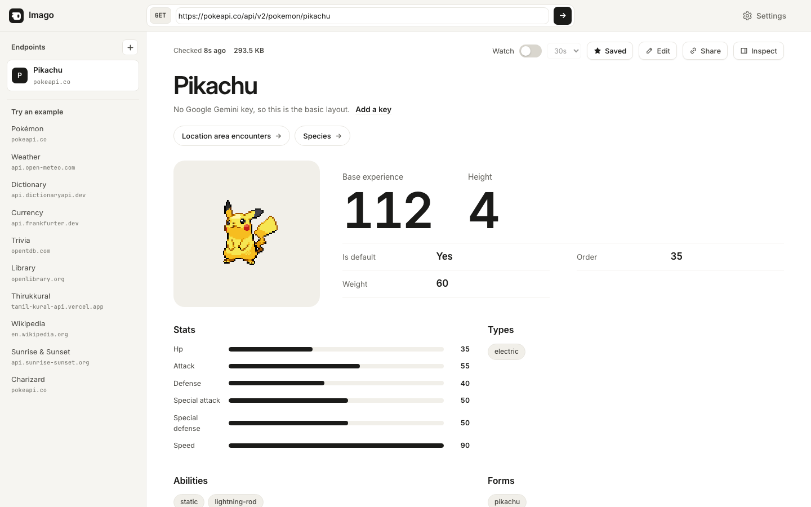
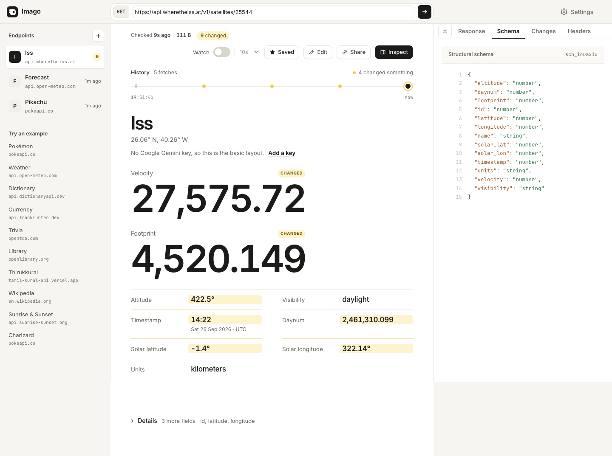
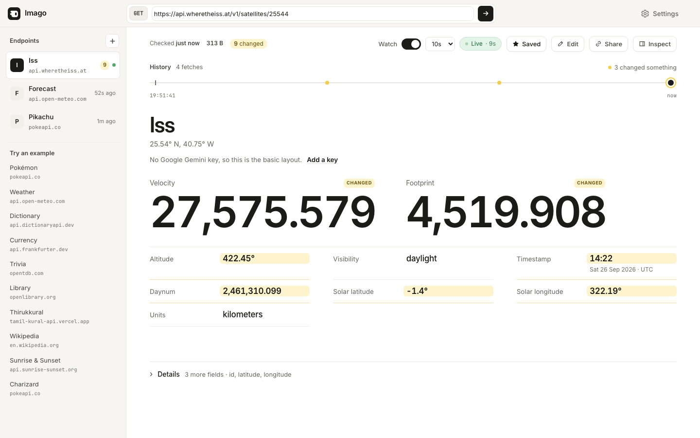
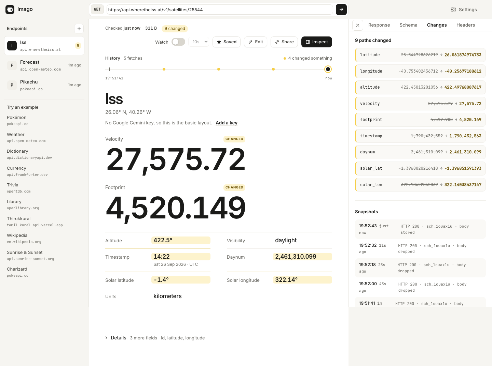
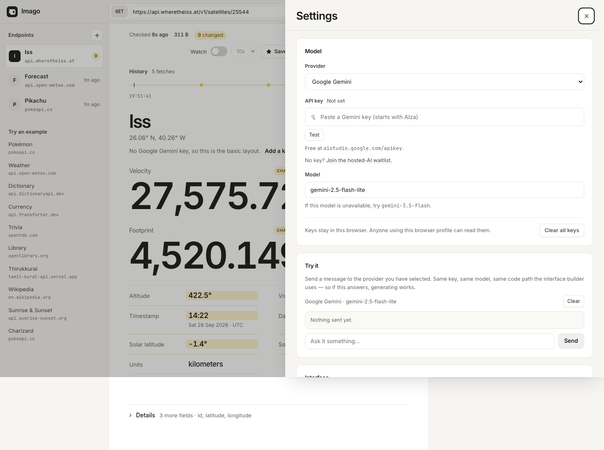

Technology assignment · Build Something That Does Stuff · Faculty: Surya B
Imago: APIs become interfaces
Paste the URL of any public JSON API. Imago fetches it, designs a page for the shape of the response, remembers the design, and watches the endpoint change. Getting, remembering and time are one product, not three demos.
The brief, and the idea
A small web app that gets, remembers and acts on time, in HTML, CSS and JavaScript with browser storage, and feels like one complete thing.
What the brief asked, and where it is met
What it helps someone do
Understand an API's data in seconds, and see when it changes.
Instead of scrolling raw JSON, a developer sees the page that data deserves.
Why this idea
It is the only one where all three behaviours are one loop, not three features.
Imago (first called Morph) is Latin for image, and an insect's final stage after metamorphosis.
Ideas I weighed first
Internet Terrarium, Orbiting Dead Drop, API Time Machine, Anti-Feed, Internet Sensor Board, Internet Alarm Clock, JSON Archaeologist. I skipped the weather app, movie tracker and recipe box on purpose.
Get, remember, time: one loop
A fetch is fingerprinted, the fingerprint decides what is remembered, and time brings the next fetch to compare against it.
Any public GET endpoint, and a model
- Paste a URL or a
curlcommand. - Its shape (values replaced by types) is hashed into a fingerprint.
- A model (Gemini or Groq, your own key) designs a page for that shape; with no key, rules do.
- Failures are named plainly: offline, server down, or CORS.

Five stores, all in the browser
- Designs by shape: one model call per shape.
- Saved endpoints, with last-opened times.
- Snapshots: the last 10 fetches per endpoint.
- Your edits: renamed, moved or hidden fields.
- Where you were: a reopened tab rebuilds the last page with no request.

Watch an endpoint change
- Watch re-fetches every 10, 30 or 60 seconds.
- Each fetch is diffed with the last; changed values are marked CHANGED.
- A history strip ticks each fetch, yellow where something moved.
- In another tab, the title counts changes ("(3) Forecast") and a notification can fire.



How it works
The model never writes HTML, CSS or JavaScript. It returns a JSON plan, and Imago's renderer draws it with textContent.
Fetch
Abortable, with a 30-second timeout.
Fingerprint
Values become types, then a hash: sch_1ouax1u.
Seen this shape?
Yes: reuse the plan. No: ask before calling the model.
Plan
Model or rules pick fields and components.
Validate
Unknown types dropped, paths checked, 20 components at most.
Render
15 components: metric, table, chart, gauge…
Snapshot
10 per endpoint, the newest with its body.
Diff
Compare path by path, mark what changed.
sch_1ouax1u.A plan, as the model returns it
{
"title": "Pikachu",
"titlePath": "name",
"layout": "profile",
"components": [
{ "type": "image", "path": "sprites.front_default" },
{ "type": "metric", "path": "base_experience",
"emphasis": "hero" },
{ "type": "badges", "path": "types",
"itemPath": "type.name" },
{ "type": "statBars", "path": "stats",
"labelPath": "stat.name", "valuePath": "base_stat",
"max": 255 }
],
"actions": [{ "type": "follow", "path": "species.url",
"label": "Species" }]
}
Without any AI
With no key, rules read the data's shape (never an API's field names) and plan the page. Every page shown here was drawn this way.
The rules
- short lists of name + number become bars; lists of names become badges; other lists become tables
- numeric arrays that line up with timestamps become charts; three or more timestamps become a timeline
- answers nested under
currentorresultsare lifted up, with units from a matching_unitsobject - IDs, versions and offsets fold into Details
Decisions, and why
The brief says there is no single correct way to build it. These are the calls I made.
| Decision | Why |
|---|---|
| The model returns a plan, not a page | Both API data and model output are untrusted. A plan can be validated; HTML could carry scripts. The optional full-HTML mode is sandboxed. |
| Remember designs by shape, not URL | Every Pokémon shares one shape, so one model call serves them all. Titles come from each response (titlePath). |
| Ask before spending | A key is never spent without a click. |
| Works with no key | A first visit shows a real page, not a key form. |
| Browser only, no server | As the brief asks; keys stay on the user's machine. The cost: APIs that block browsers (CORS) cannot be read. |
| Credentials stay in the session | Authorization headers live in sessionStorage; what they fetched is not snapshotted. |
| Native ES modules, no build step | The browser loads js/main.js and its modules directly. A static server is the whole deployment. |
| A Content Security Policy | No inline scripts, https fetches only (plus localhost), and no framing by other sites. |
Built with HTML, CSS and JavaScript only
The four packages in package.json are test tools and never reach the browser.
js/, plus a tiny theme scriptWhich module owns what
| Module | Owns |
|---|---|
request.js | The request's lifetime: fetch, cancel, time out, CORS diagnosis, curl import, snapshots, Watch timer |
schema.js | The shape fingerprint and the diff |
llm.js | Model calls, the prompt, the HTML sandbox |
spec.js | Validating plans, and the no-key rules |
render.js · values.js | The 15 components, and how each value is formatted (dates, durations, bytes, percentages) |
storage.js | localStorage and sessionStorage, with recovery when storage is full |
endpoints.js · panes.js · ui.js · chat.js | Saved endpoints, history strip, inspector, Settings, the provider console |
main.js | Start-up, share links, Watch alerts |
How I know it works
Vitest with jsdom boots the real app in a fresh page for every test.
render.js (67%) is the gapEvery bug fix gets a test, then the fix is broken on purpose to prove the test fails. That caught three tests that always passed.
The audit: the worst four of 30
A security review, a correctness hunt and a browser QA pass, run on 24 September (v0.13.0.0).
A remembered design kept its first title. Ditto, opened after Pikachu, said "Pikachu". Plans now name their title field.
A slow request locked the app and lost your typed URL. A new request now aborts the old one.
Generated HTML could send data out via a model-written image URL. It may now load only URLs in the data.
Keys in the address leaked into share links and prompts. ?api_key= is now stripped and masked.
| Check, on every change | Catches |
|---|---|
npm test | behaviour |
npm run check | a missing import, which without a build step is a blank page |
npm run design:check | UI changed without updating Figma |
How it grew
141 commits and 29 tagged releases in seven days, each recorded in CHANGELOG.md.
- 0.1 · 22 SepURL to page, shape cache, snapshots, Watch.
- 0.2 – 0.3Provider keys and a model console.
- 0.4 – 0.5 · 23 SepEverything on one screen.
- 0.6 – 0.7curl import, CORS diagnosis, better no-key pages.
- 0.8 – 0.10Share links, alerts, page editing, 16 modules.
- 0.11 – 0.12 · 24 SepLive at imago.onslate.in, with a landing page.
- 0.13 · 25 SepThe audit: 30 fixes, each with a test.
- 0.14 – 0.15 · 26 SepLaunch work: Open in Imago links, pricing, a waitlist.
What I left out, on purpose
- POST, PUT, DELETE. A GET is safe to repeat on a timer.
- A CORS proxy. It would route people's keys through my machine.
- Accounts and sync. They need a server.
- A framework. The brief rules it out.
Known limits, and tools used
What is still open, and what built it.
Known and left open
- APIs that block browser apps cannot be read, by design.
- Rules cannot know units the API does not state: the ISS altitude above shows in degrees, not kilometres.
- The remembered designs have no size limit yet.
- Some touch targets are under 44px on phones.
The open list is in TODOS.md.
Tools used
- Claude (Claude Code) wrote most of the code with me, with gstack skills for QA, review and shipping. The idea and the calls in 04 were decided in conversation; I rejected plenty of its first answers.
- Figma holds the design, kept in sync with the shipped app.
- Google Gemini and Groq are the model providers users can choose.
- Zoho Catalyst Slate hosts the app.